Accessing devices using high level register models¶
Sending low level register read and write commands on I2C bus is useful, but registers always have clear specifications for their fields and how to interpret them. Here is a definition for OSR register for BMP581 chip
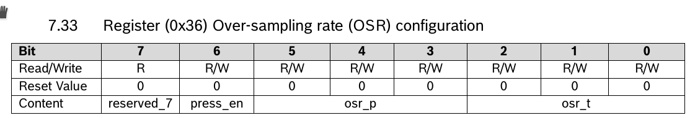
Let's define this register in I2CC to enable much higher level access to this chip.
But first, since we are dealing with BPM581 chip lets create project specific to this chip. We do that by going to menu "File" => "Save Project As".
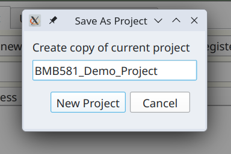
This will copy currently opened project under a new name and open it. This will be reflected in the project label in the lower left corner.
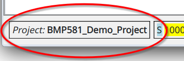
There are two ways to define a register. We will do first when we need to more informaton upfront. In the RegList tab click on "Define new register" button.
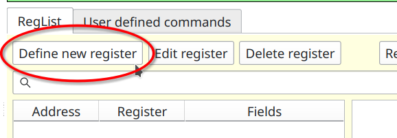
You will then be prompted to provide how wide is this register going to be, i.e. how many bits it will hold. The choices are 8, 16, 24 and 32. For our chip app registers are 8 bit wide. So we simply click "Ok". This will bring us to the next window "Create new register"
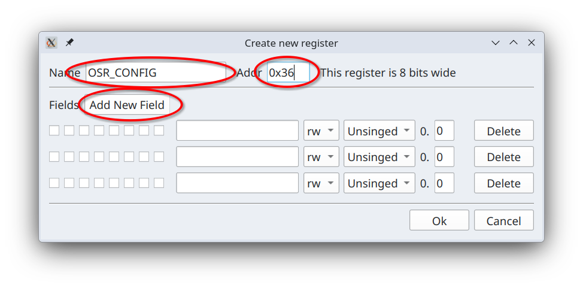
We enter register name OSR_CONFIG and address 0x36 and click a couple of times on
"Add New Field" button. This gives us three, so far empty, fields. Now by clicking checkboxes on the left we pick bits
assigned to each field and gieve each field a name as per manufacturer provoded documentation.
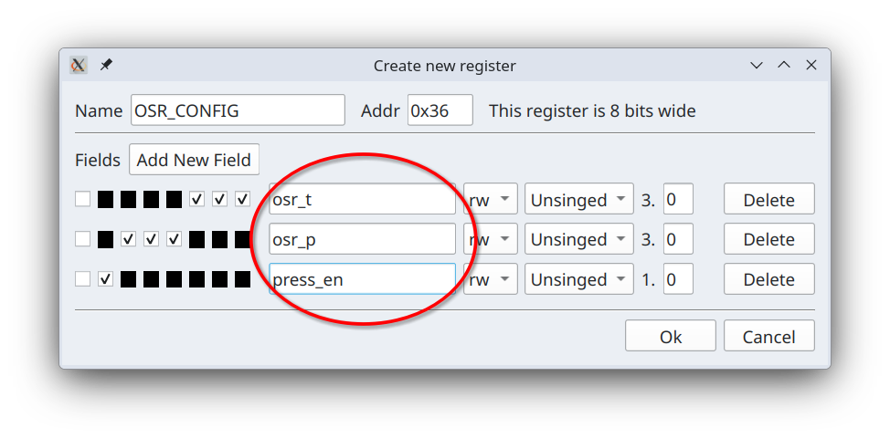
All fields above are read/write and have numeric types U3.0, U3.0 and U1.0, i.e. they are all unsigned fixed point
numbers with no fractional parts. This sybolic representation of fixed point numbers is know as
"Q number format".
Let's click "Ok" and now in RegList table you will see one entry for our newly defined register.
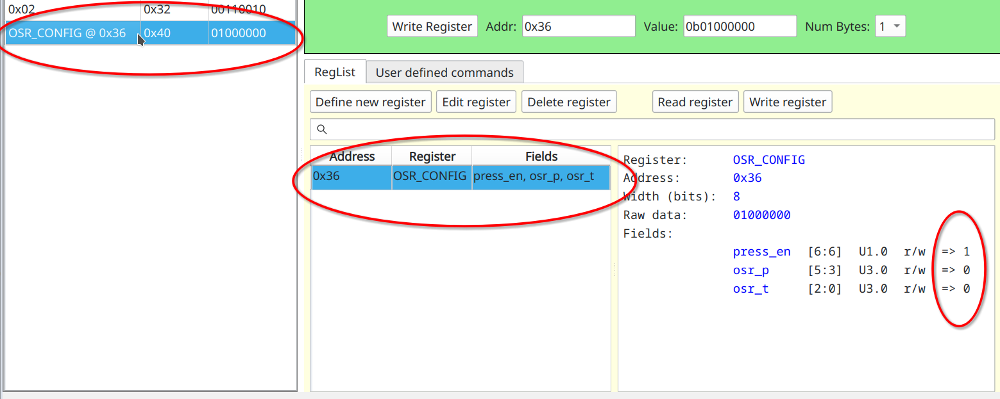
In the Results panel on the left entry for this register has both name and an address. On the right of RegList table there is a user readable definition for this register as well values stored in the raw data. The reason these values are show is that this register is present in the left most Results table. We can re-read this register by double-clicking on RegList row for it or selecting it and clicking on "Read Register" button. By right mouse-clicking we can access its context menu.
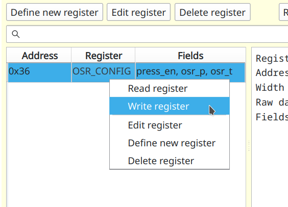
Option "Read Register" is first and default action for double-clicking. "Delete register" prompts you to confirm that you want to delete this register and then deletes it. Selecting "Write register" brings up another dialog where you can enter values for each individual fields.
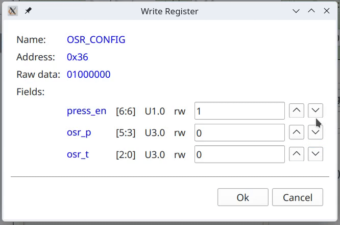
Since all fixed point types are discrete you can cycle through them by using up and down arrow buttons to the right of each field. Alternatively when you are editing each field you can simply use up and down arrow keys on the keyboard to the same effect.
Selecting "Edit register" from context menu will allow you to modify this register model.
You can also create register from data already present in the register results table.
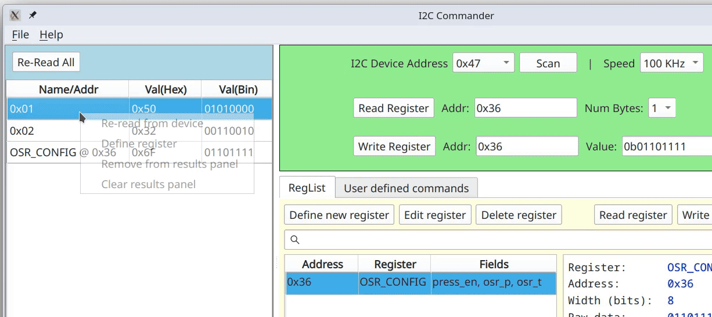
You can see that register width and address are automatically filled in.
Once you have all registers defined there might be a lot of them. To make it easier to find them you can enter text in the search field above the table of registers. This will perform a dynamic fuzzy search for entered characters across both, register names and their fields.
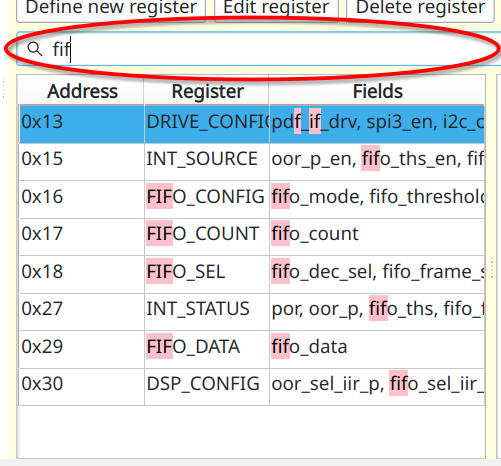
Links¶
- Fixed-point arithmetic - definition of fixed point numbers.
- Q number format - representation that we use for fixed point numbers